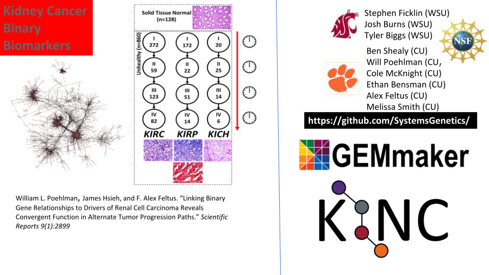

Experiences using Singularity on Palmetto Cluster
Ashwin Srinath
Outline
- About Palmetto Cluster at Clemson University
- Quick introduction to Singularity
- Use cases
- Researcher stories
- Demos:
- Singularity + MPI
- Pulling images from the NVIDIA GPU Cloud and deploying on JupyterHub (RAPIDS)
- Large dataset visualization with Paraview
About Palmetto Cluster
$ cat /etc/hardware-table
PHASE COUNT MAKE MODEL CHIP(0) CORES RAM(1) GPUs
1 75 Dell PE1950 Intel Xeon E5345 8 12 GB 0
2a 158 Dell PE1950 Intel Xeon E5410 8 12 GB 0
2b 84 Dell PE1950 Intel Xeon E5410 8 16 GB 0
3 225 Sun X2200 AMD Opteron 2356 8 16 GB 0
4 326 IBM DX340 Intel Xeon E5410 8 16 GB 0
5a 320 Sun X6250 Intel Xeon L5420 8 32 GB 0
5b 9 Sun X4150 Intel Xeon E5410 8 32 GB 0
6 67 HP DL165 AMD Opteron 6176 24 48 GB 0
7a 42 HP SL230 Intel Xeon E5-2665 16 64 GB 0
7b 12 HP SL250s Intel Xeon E5-2665 16 64 GB 2(3)
8a 71 HP SL250s Intel Xeon E5-2665 16 64 GB 2(4)
8b 57 HP SL250s Intel Xeon E5-2665 16 64 GB 2(4)
8c 88 Dell PEC6220 Intel Xeon E5-2665 16 64 GB 0
9 72 HP SL250s Intel Xeon E5-2665 16 128 GB 2(4)
10 80 HP SL250s Intel Xeon E5-2670v2 20 128 GB 2(4)
11a 40 HP SL250s Intel Xeon E5-2670v2 20 128 GB 2(6)
11b 4 HP SL250s Intel Xeon E5-2670v2 20 128 GB 0
12 30 Lenovo NX360M5 Intel Xeon E5-2680v3 24 128 GB 2(6)
13 24 Dell C4130 Intel Xeon E5-2680v3 24 128 GB 2(6)
14 12 HP XL1X0R Intel Xeon E5-2680v3 24 128 GB 2(6)
15 32 Dell C4130 Intel Xeon E5-2680v3 24 128 GB 2(6)
16 40 Dell C4130 Intel Xeon E5-2680v4 28 128 GB 2(9)
17 20 Dell C4130 Intel Xeon E5-2680v4 28 128 GB 2(9)
18a 2 Dell C4140 Intel Xeon 6148G 40 372 GB 4(10)
18b 65 Dell R740 Intel Xeon 6148G 40 372 GB 2(11)
18c 10 Dell R740 Intel Xeon 6148G 40 748 GB 2(11)The basic Singularity workflow
Build on machine with root access (creates a single file
application.simg).Copy
application.simgto another host (e.g., HPC cluster, cloud). No root access required.Run container on second host:
What makes Singularity great for HPC?
Single file format makes it easy to move around and deploy containers
- Compatibility with Docker images (no need to have Docker installed), enable you to pull from:
- DockerHub
- Nvidia GPU Cloud (NGC)
Native support for GPUs. Just pass
--nvto bind GPU drivers from host to container:Native support for MPI
Use cases
- Administrators:
Provisioning software: has saved us many hours (sometimes days) that would have been spent installing and configuring software and dependencies for user applications
Containerized services: (JupyterHub, XdMod) allows us to test user-facing services locally, and deploy on the cluster with ease.
- Users
Self-managed software environments: users’ long-held fantasies of using
apt-geton the cluster are realized:Reproducible workflows
Deploying Singularity: modules
Modules remain the most-used tool for software management by users.
Singularity’s single file format makes it very easy to deploy Singularity containers as software modules:
$ module load grass
$ which grass
alias grass='singularity exec \
-B /software:/software
-B /scratch2:/scratch2 \
-B /local_scratch:/local_scratch \
/software/singularity-images/grass-gis-stable.img /usr/local/bin/grass'
/software/singularity/2.5.2/bin/singularity
$ grass # launches grass - as expectedDeploying Singularity: JupyterHub
- Multi-user hub for Notebook Servers
- Preferred way of using the cluster for significant (10-20%) number of users
- Growing number of applications are Python/R based with complex dependencies
- Q: How to deploy Singularity in Jupyter Notebooks?
Deploying Singularity: JupyterHub
Simple change to kernel.json:
Case study:

Case study:

Demos
- Singularity + MPI
- Pulling images from the NVIDIA GPU Cloud and deploying on JupyterHub (RAPIDS)
- Large dataset visualization with Paraview